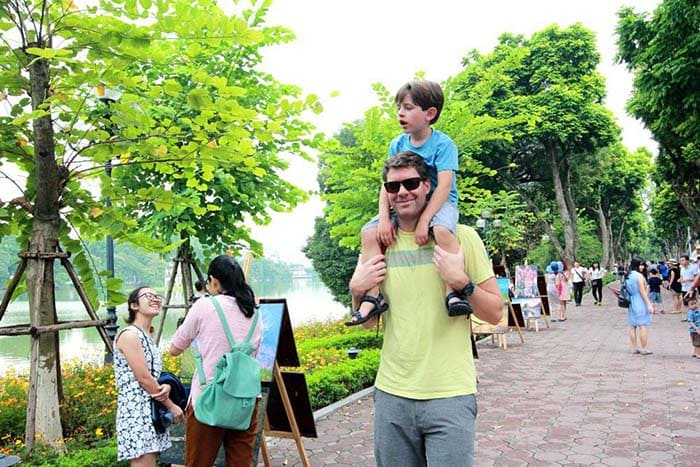
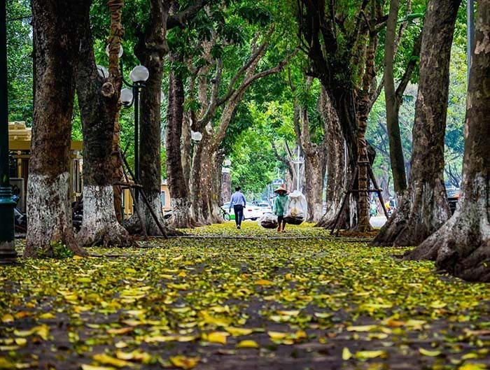
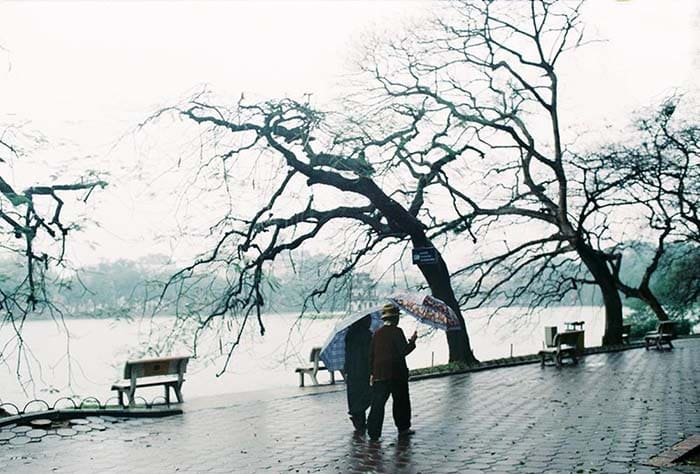

ĐIỂM ĐẶC BIỆT CỦA KHÍ HẬU MIỀN BẮC QUA 4 MÙA HÀ NỘI
-
MÙA XUÂN HÀ NỘI
Khi những cơn gió lạnh tê tái đi qua để nhường chỗ cho làn gió mới hiu hiu với những cơn mưa phùn nhè nhẹ, ấy là lúc mùa xuân đã gõ cửa Hà Thành mang theo bao sức sống trên những chồi non mơn mởn màu xanh. Mưa phùn là tiết trời đặc trưng rõ nét nhất của mùa xuân Hà Nội nói riêng mà miền Bắc nói chung. Những cơn mưa như màn sương giăng khắp đất trời, ngày đêm thì thầm với cỏ cây hoa lá, mưa không lớn nhưng cũng đủ làm ướt vai áo người thương dủ chỉ đi cùng ta một đoạn đường ven hồ Hoàn Kiếm. Sau những cơn mưa ấy, bao chồi non vươn lên, không còn e ấp ẩn mình trong cành khô xơ xác nữa. Muôn hoa cũng khoe sắc đua hương tô điểm cho đất trời.
Mưa xuân khiến người ta bồi hồi xao xuyến. Trong thời tiết như vậy, bạn nên chọn 1 quán cafe để thư giãn. Nhâm nhi một tách cafe, ngắm nhìn cảnh vật Hà Nội – là khoảng thời gian tuyệt vời nhất. Bạn sẽ thấy tâm hồn nhẹ nhõm và tràn đầy yêu thương. Hãy cảm nhận cái tình của Hà Nội trong mỗi sáng mùa xuân.
Mùa xuân là lúc hoa trái đẹp và hấp dẫn nhất trong năm. Hãy nhìn những bông hoa đua sắc, cây cối xanh mơn mởn. Tất cả như ganh đua nhau trong tiết trời mùa xuân.
-

MÙA HẠ HÀ NỘI
Nhắc đến mùa hè Hà Nội, không ai quên được cái nắng gay gắt của nó. Mỗi khi ra đường, ai nấy cũng bịt kín. Nào thì mũ nón, áo chống nắng, khẩu trang, kính râm. Mục đích là để phòng tránh ánh nắng khắc nghiệt nơi đây.
Dẫu biết mùa hè Hà Nội mệt mỏi đến vậy. Nhưng ai nấy cũng mong đến mùa hè. Đây là mùa nhộn nhịp, sầm uất nhất trong năm. Các hàng quán Hà Nội đông nghẹt người mỗi khi hè đến. Trung tâm vui chơi giải trí luôn trong tình trạng quá tải.
Đường phố ban đêm ở Hà Nội lung linh ánh đèn. Dòng người đổ xô ra đường chỉ để vui chơi ăn uống. Không sai khi nói rằng Hà Nội đẹp nhất về đêm. Bạn sẽ thấy những điều thú vị nhất trên mảnh đất Thủ đô, khi mặt trời đi ngủ. Văn hóa đường phố bắt đầu xuất hiện. Ẩm thực, âm nhạc, hàng hóa thi nhau bung lụa. Tất cả dang tay chào đón khách hàng.
-

MÙA THU HÀ NỘI
Nhắc đến mùa thu Hà Nội không ai quên được “nỗi buồn” của nó. Những bài thơ, bản nhạc viết về mùa thu sao tâm trạng đến vậy. Có chăng mùa thu là mùa rụng lá. Nó gợi nhớ nỗi niềm hiu quạnh và cô đơn của con người.
Khí hậu Hà Nội ảm đạm nhất vào mùa thu. Những cũng là mùa trữ tình và lãng mạn nhất trong năm. Tiết trời mùa thu hanh khô, se lạnh. Không tốt lắm cho những ai mắc bệnh tai mũi họng. Nói vậy thôi, chứ mọi người thích mùa thu lắm đấy.
Mùa thu là mùa của đôi lứa yêu nhau. Họ e ấp, tình tứ bên nhau – cảm xúc yêu thương như trào dâng mãnh liệt. Các cặp đôi thường chọn quán cafe là nơi dừng chân. Họ đến đấy để tâm sự, chia sẻ niềm vui nỗi buồn. Quan trọng hơn là thổ lộ tình cảm cho nhau.
Du khách Quốc tế ấn tượng với mùa thu Hà Nội. Tiết trời dịu mát, những cơn gió mùa thu mơn man, khe khẽ như thì thầm bên tai du khách. Cây cối khoác lên mình chiếc áo màu vàng, rụng dần xuống mặt đất. Đường phố Hà Nội ngập tràn hình ảnh lá rụng. Sao lãng mạn và xúc cảm đến vậy.
Nhắc đến Mùa thu Hà Nội du khách sẽ tưởng tượng ngay đến hương hoa sữa, hoa xà cừ từng chùm trắng xanh ngào ngạt, phảng phất nở trắng khắp các phố phường Hà Nội. Hay không thể thiếu mùi hương của cốm mới thơm ngào ngạt hương vị đặc trưng của lúa non len lỏi qua từng góc phố trên những gánh hàng rong. Thời tiết trời Hà Nội sang thu có lẽ là thời điểm mà du lịch Hà Nội nở rộ, hầu hết du khách đi du lịch giá rẻ đều yêu thích mùa thu ở Hà Nội
-

MÙA ĐÔNG HÀ NỘI
Mùa đông Hà Nội lạnh lẽo và ẩm ướt. Cái lạnh đến cắt da, cắt thịt có làm bạn ngao ngán? Không đâu, mùa đông Thủ đô cũng đẹp lắm đấy. Hà Nội thêm phần tĩnh lặng khi tiết trời vào đông.
Người Hà Nội có vẻ từ tốn, chậm rãi vào mùa đông. Có chăng thời tiết lạnh quá khiến họ như vậy. Mùa đông tuy lạnh lẽo, nhưng lại có phần gắn kết yêu thương. Đông đến, ai nấy cũng muốn quây quần bên gia đình. Họ chẳng muốn đi đâu ngoài ngôi nhà của mình.
Nếu quan sát kỹ, bạn sẽ thấy: Hà Nội vắng vẻ nhất vào mùa đông. Mỗi sáng mùa đông lạnh lẽo, hiu quạnh. Bầu trời phủ toàn sương trắng, những giọt sương còn đọng trên lá, mặt hồ yên ả không gợn sóng. Thi thoảng những cơn gió buốt lạnh, khiến ta xao xuyến đến khó tả. Tất cả thể hiện “cái riêng” có của Hà Nội. Đúng là vẻ đẹp của nghìn năm văn hiến.
Mùa đông Hà Nội từ tháng 11 đến tháng 1, khoảng thời gian lạnh nhất trong năm, đây cũng là lúc Hà Nội khoát lên mình tấm áo tĩnh lặng nhất. Cái lạnh thấu da thịt của mùa đông Hà Nội khiến mọi hoạt động thường nhật của người dân Hà Nội trở nên chậm chạp hơn, bớt ồn ào, vội vã như những tháng mùa hè.